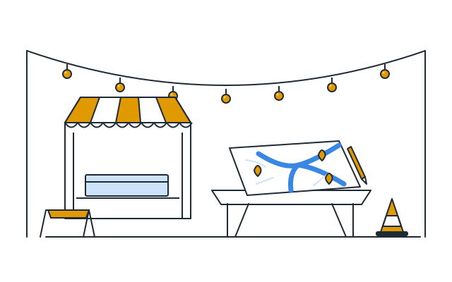
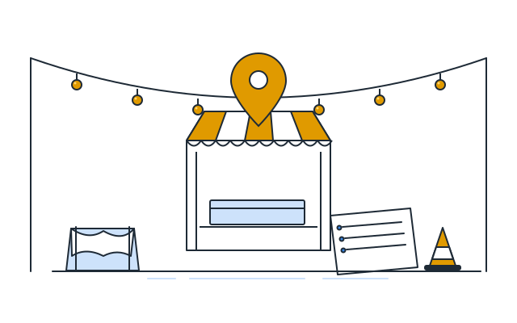

The optimization lab is still being built
You'll be able to pick the neighborhoods, districts or months you care about and re-run the model to see where markets should go.

The recommendation comes after the model runs
This tab will show which neighborhoods and dates the model picks, and how often they stay picked when the assumptions change.